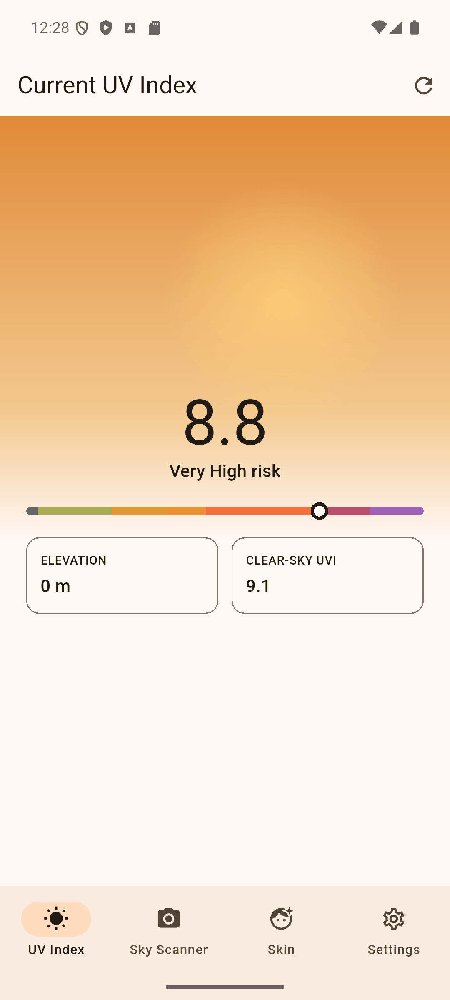
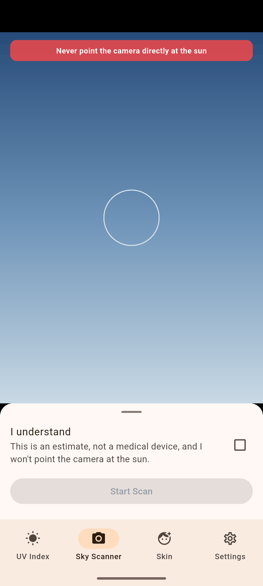
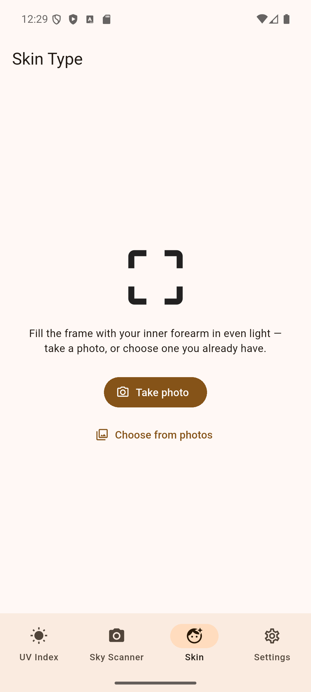

How safe are you in today's sun?
Point your phone at the sky and at your arm. Ten seconds later: one number, tuned to your skin, and the one thing to do.
Free forever · no subscriptions
Sky, arm, number.

Point at the sky
The app fetches the UV forecast for where you stand, then reads cloud cover through your camera to make the number local rather than regional.

Photograph your inner forearm
A single photo estimates your skin tone, so what you see is calculated for you — not for a notional average person.
Read your safe sun time
One number: how many minutes of unprotected sun stay below the sunburn threshold for your skin, at the UV level right now. See the full tables by skin type.
Free, forever.
UV Tracker is free and will stay free. There is no paid tier, no subscription, and no feature held back behind a purchase. Sun safety is not something to paywall.
The app is supported by modest advertising and clearly-disclosed sun-protection product suggestions. Nothing that interrupts a reading, and never between you and a safety warning.
Honest about its limits
Not a medical device
Readings are estimates derived from public forecast data and a phone camera. They are not a substitute for professional medical advice, diagnosis, or treatment. If you have concerns about your skin, see a doctor or dermatologist.
Never point the camera at the sun
It can damage your eyes and the camera sensor. Aim at open sky, away from the sun — the app reminds you every time.
Your privacy, briefly
Photographs of the sky and of your skin are processed on your device and deleted immediately. They are never uploaded. Your skin type and settings stay on your phone. Read the full policy.
Questions?
Why the sky scan differs from the forecast, what to do when a reading looks off, how to delete your data — the support page answers the common ones, and a human answers the rest.
UV and sun safety, explained
How the UV index works, what your skin type means for it, and the numbers behind "safe sun time" — with the sources cited on every page.
-
Safe sun time by skin type and UV level
Full tables for Fitzpatrick types I–VI at every UV index, and the formula behind them.
-
Safe sun time calculator
Pick your skin type and today's UV index for an instant estimate, with sunscreen.
-
How UV Tracker measures UV and your skin type
The methodology behind the sky scan and the skin photo, and what stays on your device.